Home » Reference » Crafting
Crafting
Every crafting, smelting, smithing and brewing recipe the mod adds.
Every recipe the mod adds, as the game shows it: 30 crafting, smelting and smithing recipes and 3 brewing steps. Every one of them now unlocks in the recipe book as soon as you hold one of its ingredients. Click a recipe to see it larger.
Doors#
The door frame. Breaks back into 2 iron ingots, 2 copper ingots and sometimes the Block of Iron.
 Reinforced Iron
Reinforced Iron
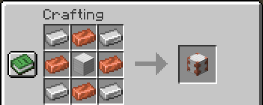
Iron ingots in the corners, copper ingots on the edges, a Block of Iron in the middle. Makes one.
Stand-In#
The Remembering's respawn anchor, new in this build. What it does is on Items.
 Stand-In
Stand-In
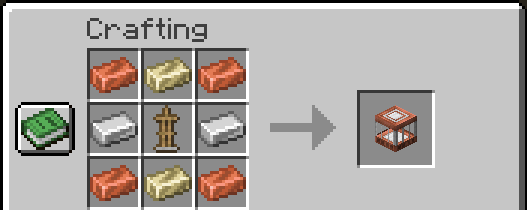
Copper ingots in the corners, Memarium Ingots top and bottom, iron ingots on the sides, an armor stand in the middle.
Memarium#
 Memarium Ingot (smelting)
Memarium Ingot (smelting)
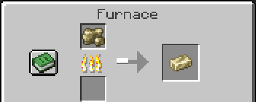
Raw Memarium or any Memarium ore. Furnace 10 s, blast furnace 5 s, 1 experience each.
 Block of Memarium
Block of Memarium
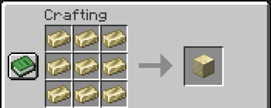
Nine Memarium Ingots.
Memarium Ingot from a block
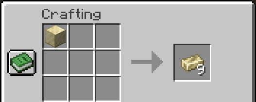
One Block of Memarium makes nine ingots.
 Block of Raw Memarium
Block of Raw Memarium
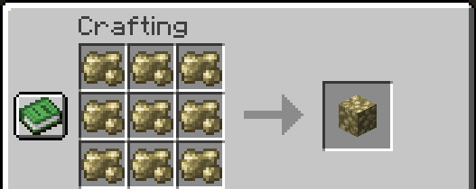
Nine Raw Memarium.
 Raw Memarium from a block
Raw Memarium from a block
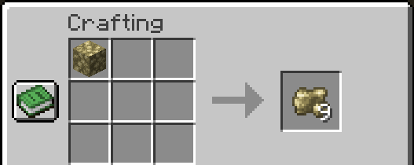
One Block of Raw Memarium makes nine.
Memarium tools and armor (smithing)#
At a smithing table: a Remembered Upgrade, the diamond tool or armor piece, and a Memarium Ingot. Enchantments and trims carry over, as with netherite.
 Memarium Sword
Memarium Sword
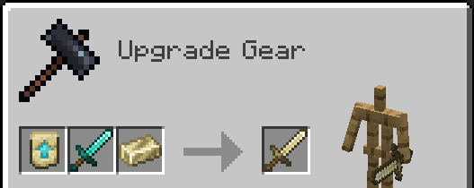
Remembered Upgrade, Diamond Sword, Memarium Ingot.
 Memarium Pickaxe
Memarium Pickaxe
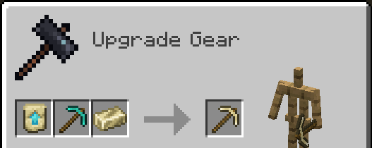
Remembered Upgrade, Diamond Pickaxe, Memarium Ingot.
 Memarium Axe
Memarium Axe
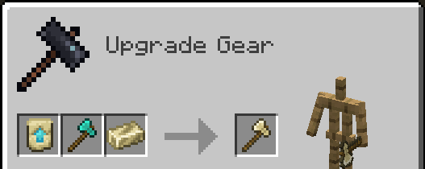
Remembered Upgrade, Diamond Axe, Memarium Ingot.
 Memarium Shovel
Memarium Shovel
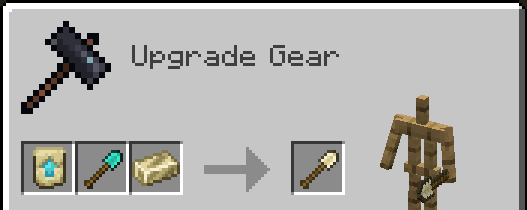
Remembered Upgrade, Diamond Shovel, Memarium Ingot.
 Memarium Hoe
Memarium Hoe
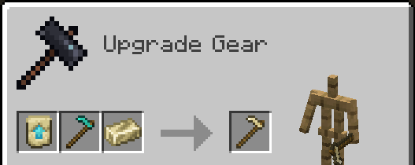
Remembered Upgrade, Diamond Hoe, Memarium Ingot.
 Memarium Helmet
Memarium Helmet
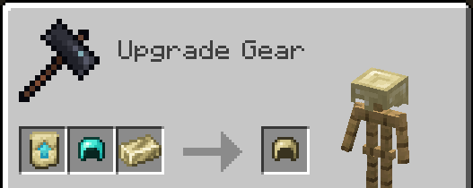
Remembered Upgrade, Diamond Helmet, Memarium Ingot.
 Memarium Chestplate
Memarium Chestplate
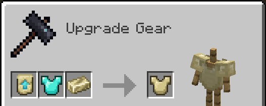
Remembered Upgrade, Diamond Chestplate, Memarium Ingot.
 Memarium Leggings
Memarium Leggings
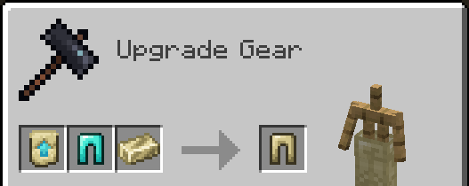
Remembered Upgrade, Diamond Leggings, Memarium Ingot.
 Memarium Boots
Memarium Boots
Remembered Upgrade, Diamond Boots, Memarium Ingot.
Smithing templates#
Both templates are found first, then copied.
 Remembered Upgrade (copy)
Remembered Upgrade (copy)
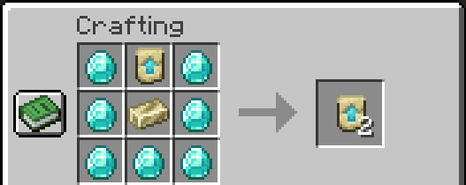
Seven diamonds round a Remembered Upgrade and a Memarium Ingot. Makes two.
 Builder Armor Trim (copy)
Builder Armor Trim (copy)
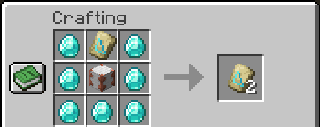
Seven diamonds round a Builder Armor Trim and a Reinforced Iron. Makes two.
Memory items#
The Settled Heart comes from beating the Keeper.
 Memento
Memento
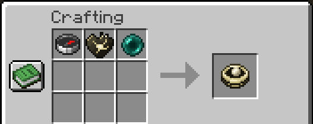
A compass, a Settled Heart and an ender pearl, in a row.
 Snapshot
Snapshot
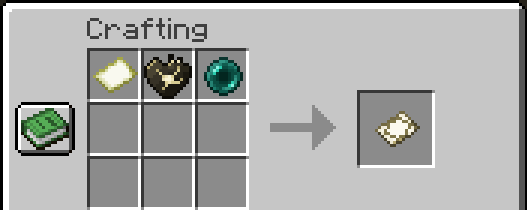
A map, a Settled Heart and an ender pearl, in a row.
 Memory Anchor
Memory Anchor
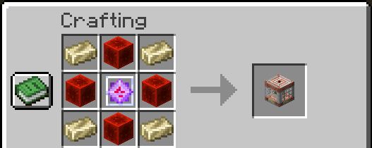
Memarium Ingots in the corners, Blocks of Redstone on the edges, an End Crystal in the middle.
Brewing#
In a brewing stand, in two steps. Details on Insanity.
Potion of Memory
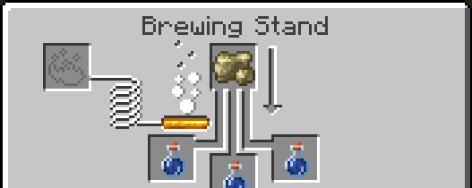
Awkward Potions and Raw Memarium.
 Potion of Insanity
Potion of Insanity
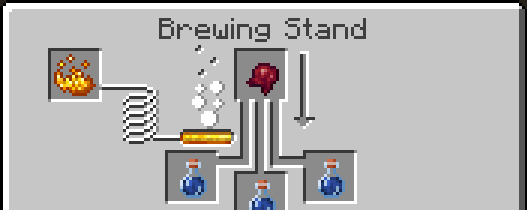
Potions of Memory and a Fermented Spider Eye.
Potion of Sanity
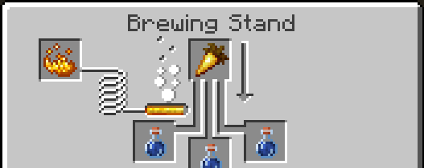
Potions of Memory and a Golden Carrot.
All three
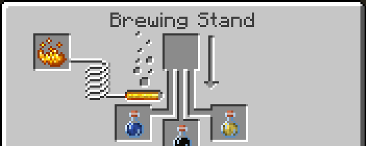
Memory, Insanity and Sanity, side by side.
Gunpowder makes the splash versions and dragon's breath the lingering ones, as in vanilla.
Not craftable#
Lamps, settled blocks, sherds, the Day One disc, the Settled Heart, the Still Life Head and Memarium ore only come from the world. Remembered Upgrade and Builder Armor Trim templates are found first, then duplicated.